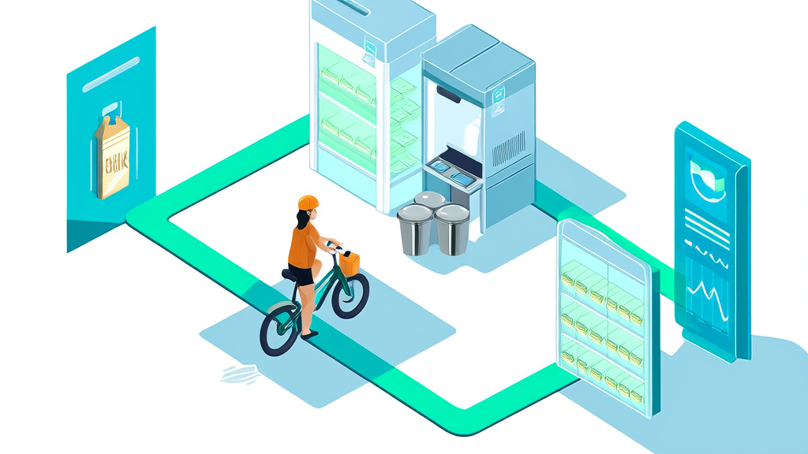
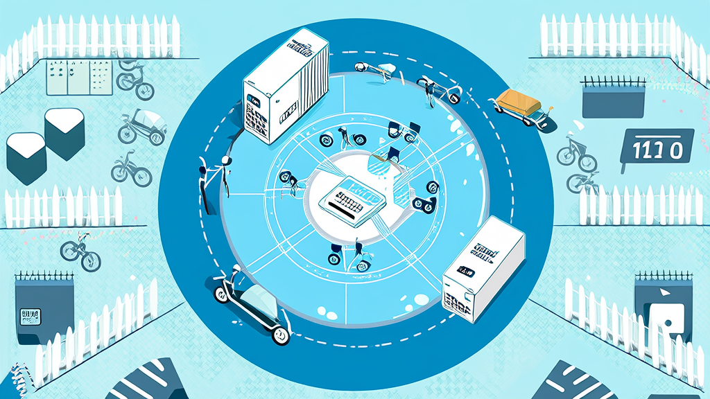
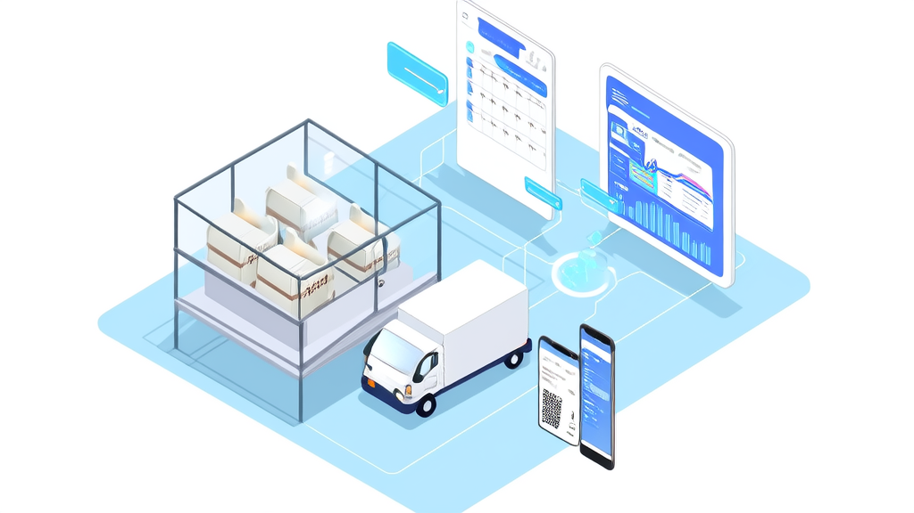

讯业信息鲜奶订阅平台:周期订奶系统与社区零售一体化案例
河南讯业信息科技有限公司为乳企与区域经销商交付鲜奶订阅平台,以周期订奶系统为核心交易、逐日履约为管理主线,将用户、奶站、骑手与运营后台放入同一业务链路。平台整合多模式配送排期、社区围栏、门店自提核销、线上商城、会员余额与AI导购,形成社区零售一体化能力。上线后实现履约可监控、复购可运营、用户资产可沉淀,新增小区、奶站和骑手可按现有配置复制扩张。该案例表明,乳企数字化的关键不是把订奶搬到线上,而是用逐日履约确定性支撑长周期订阅信任。
- 周期订奶订单的典型消费周期 30—90天以上,系统按天生成逐日履约子单
- 多模式配送与排期覆盖模式 每天送、工作日送、周末送、自定义日期4种,支持送货上门与门店自提
- 门店自提核销凭证 二维码+六位数字码双凭证,先只读预览再确认核销
- 平台功能模块数量 8个功能模块,覆盖交易侧、履约侧与角色侧
- 技术架构 前后端一体单体应用,配合MySQL、Redis、文件存储、微信服务号/JS-SDK与外部大模型服务
- 可披露成效维度 5项:履约可监控、复购可运营、用户资产可沉淀、运营效率提升、可复制扩张
鲜奶订阅平台 + 社区零售一体化：把周期订奶的履约链路装进同一条业务线

河南讯业信息科技有限公司打造的鲜奶订阅平台，以周期订奶系统为核心交易、逐日履约为管理主线，把用户、奶站、骑手与运营后台放进同一条业务链路，实现周期订奶与社区零售一体化。
周期订奶是一门“先收钱、后按天交付”的生意，真正的难点从来不在下单，而在接下来的 30 到 90 天里每天都要准确送达。平台让用户一次购买一段周期权益，系统按天生成逐日履约子单，再叠加多模式配送排期、社区围栏开通、门店自提核销与线上商城，把周期订奶与社区零售一体化落到同一条履约链路上。
这套平台带来的直接变化是三点：履约链路变得可监控，每一次送达、核销、异常都有凭证；复购从“靠人记、靠群喊”变成可运营的机制；用户、地址、订单与会话记录沉淀为平台资产，而非个人微信里的联系人。同时，新增小区、奶站与骑手只需复用现有的围栏、营业时间与收益单价配置即可扩张，让社区零售一体化具备可复制性。下文从行业挑战、客户痛点、方案设计、实施决策与成效五个层面展开。
行业背景与挑战：长周期、高频次、强社区属性的订阅零售，天然是履约生意

乳制品与生鲜订阅零售有三个绕不开的结构性特征。
第一，消费周期长，履约按天拆分。 一份订奶订单的消费周期通常在 30 天到 90 天以上，周期订奶系统必须把它拆成几十上百个逐日履约子单。这意味着用户的一次改单、一次停送、一次顺延，都会牵动后续多天的配送安排与结算方式。管理复杂度远高于普通电商的“一次下单、一次发货”。
第二，社区属性强，配送范围按小区围栏划分。 送奶不是全国发货，而是以小区为最小运营单元。哪个小区开通、由哪个奶站覆盖、每天几点截单、哪些日期可以自提，都是业务边界的一部分，必须由系统固定下来，而不是靠人记。
第三，多角色在同一张订单上协作。 用户、奶站、骑手、运营四方共同参与同一笔订单的交付：运营排期、奶站备货与核销、骑手领货与送达、用户确认与售后。任何一段脱节，最终都会演化为漏送、错送或重复核销，并且事后难以追溯责任。
在这样的业务结构下，行业的普遍起点是“微信群 + Excel + 人工排期”。这套组合在小规模时灵活，但一旦小区数、奶站数和骑手数同时增长，就会产生三类衔接问题：交易与履约衔接不上（订单在系统里，履约在表格里）、线上与线下衔接不上（周期配送与商城零售两套流程）、角色与数据衔接不上（订单、资金、售后分散在多张表）。乳企数字化的第一步，往往要从接上这些断点开始，而不是先增加功能，让履约协同管理成为系统的主线。
客户痛点：从微信群 + Excel 起步，鲜奶订阅平台缺失导致的三重业务断点
该客户同时经营周期订奶与社区零售两类业务，覆盖多个小区、多个奶站与自有及合作骑手。系统上线前，业务运行方式与行业普遍情况高度相似，也因此遇到了几乎每一个同行都会遇到的问题。
用户资产不在自己手里。 订奶用户的联系方式、地址、忌口与配送偏好大多散落在团长和奶站的个人微信中，复购靠人工统计，哪些用户快到期、哪些用户已流失无法及时识别。配送质量同样难以监控——用户投诉“今天没送到”，一线只能靠翻聊天记录确认。活动投放与核销脱节，发出去的优惠到底带来多少新增与续订，缺少可核对的标准。
多角色各自为政，跨角色对账困难。 小区覆盖范围、奶站归属、骑手排班分别记录在不同人的表格里，订单、资金与售后分散在多张表上，月底对账要靠反复比对。社区用户分布分散，周期配送走一套流程、商城零售走另一套流程，两套流程不共享统一的用户地址与履约记录，同一个用户在两边的信息可能不一致。
自提核销无凭证，统计滞后。 门店自提订单长期依赖微信群报单或纸质登记，核销没有可验证的凭证；营业时间与可自提日期不一致时，用户到店却取不到货；订单统计滞后，当天的核销情况要第二天才能汇总。
一改单就难以追溯。 用户临时改地址、要求顺延或停送，信息在群里流转，是否已落实到具体某一天、由哪个奶站执行，往往无从查证，漏送、错送与重复核销由此产生。
这些问题并非管理不努力，而是工具形态决定的：微信群与 Excel 能够传递信息，却无法承载状态。
解决方案：周期订奶系统 + 社区零售一体化平台，一条链路上完成交易与履约

针对上述断点，讯业信息为客户交付了一套“周期订奶 + 社区零售”一体化平台，核心设计原则是把交易与履约放在同一条业务链路上，而不是做成两套互不相通的系统。平台由八个功能模块构成，分别对应交易侧、履约侧与角色侧。
交易侧：周期权益订奶与线上商城
周期权益订奶是鲜奶订阅平台的核心交易形态。用户一次购买一段周期的配送权益，系统随即按天生成逐日履约子单，后续的改单、顺延、停送与未履约退款都以子单为单位操作，状态变化有据可查。
与之并行的线上商城支持多规格 SKU、购物车、支付、物流录入、确认收货、评价与整单退款，让社区零售商品可以在同一平台内成交。会员余额与充值套餐提供充值、钱包流水与余额支付能力，并在余额不足时给出提示，把复购的支付路径缩短。
履约侧：多模式配送排期与社区围栏
多模式配送与排期覆盖每天送、工作日送、周末送与自定义日期四种模式，同时支持送货上门与门店自提两条交付路径，并内置截单时间与排期规则，避免“已过截单时间仍能下单”这类常见纠纷。
社区围栏解决配送边界问题：系统按小区多边形边界判断订单地址是否落在可配送范围内，未开通小区的用户可以提交登记，由后台审核后开通。这一设计让扩张动作标准化——新增一个小区不是启动一个新项目，而是在既有配置上加一条围栏。
角色侧：门店自提核销、骑手履约与 AI 导购下单
门店自提采用二维码与六位数字码共用的凭证体系，核销流程被刻意设计为“先只读预览订单信息、再确认核销”，并校验营业时间与可自提日期。这样做的目的是把防止重复核销做进流程，而不是依赖店员人工把关。
骑手端覆盖领货确认、按小区/楼栋/单元组织配送路线、扫码或拍照送达、异常上报、回瓶登记与收益查看。送达留证与回瓶登记两项功能，直接化解了“是否送达”“瓶子有没有还”这两类高频争议，也让骑手收益有了可核对依据。奶站骑手管理由此从“靠人盯”转为“看记录”。
AI 导购助手通过微信服务号接入，支持文字、语音、拍照三种咨询方式，可完成商品推荐、信息补全，并直接给出订单预览与支付入口。它同时承接改单、顺延、未履约退款、质量售后与投诉建议的完整状态流转，让社区场景下的大量碎片化咨询不必全部压到人工客服。
技术选型：以较低复杂度支撑社区型高频履约
平台采用前后端一体的单体应用架构，配合 MySQL、Redis、文件存储、微信服务号与微信 JS-SDK（用于语音与拍照），外部大模型服务提供 AI 导购的对话与识别能力。这一选型的出发点很明确：社区型高频履约的业务量集中在固定时段、固定区域，系统复杂度应优先让位于稳定性和一线易用性，而不是过早引入分布式架构。对起步阶段的乳企与区域经销商而言，这意味着更低的部署与运维门槛。
界面预览
以下为项目真实界面设计(点击查看大图)

实施过程与关键决策：先固化履约主线，再叠加商城与 AI 能力
项目按“先主线、后增强”的顺序推进，三个关键决策直接决定了系统的可用性。
关键决策一：把履约而不是下单作为系统主线。 多数同类系统的重心放在下单转化上，履约只是订单的一个状态字段。讯业信息的选择相反——以逐日履约子单作为履约协同管理的基本单位，改单、顺延与未履约退款全部作用在子单上。这一决策的代价是数据模型更复杂，但收益是任何变动都可追溯到具体日期与具体约定，可对账、可复盘。事后看，这是整套系统能够成立的前提。
关键决策二：用三组配置定义业务边界。 小区围栏定义“送不送”，营业时间定义“什么时候能取”，收益单价定义“骑手挣多少”。三组配置一旦确定，新增小区、奶站、骑手都按现有配置扩展，无需重建业务流程。这让系统的扩张成本从“开发工作量”变成“配置工作量”。
关键决策三：把防错做进流程，而不是做进制度。 核销凭证统一为二维码与六位数字码，并强制“只读预览后再确认”，把重复扣减的风险挡在操作之前。在此基础上，才叠加线上商城、会员余额与 AI 导购下单能力。顺序很重要：如果核销标准尚未统一就上线商城，只会把线下的混乱放大到线上。
实施过程中的功能上线验证也遵循同一逻辑：先跑通一个奶站、一个小区的完整链路（下单—排期—领货—送达或自提核销—异常处理），确认各角色在同一订单上的状态一致，再向更多小区与奶站复制。线上商城、会员余额与 AI 导购助手在主线稳定后分批接入，降低一线人员的学习成本。
实施效果：履约可监控、复购可运营、用户资产可沉淀
需要说明的是，本次可披露素材未提供该客户的具体业务规模与量化提升比例，因此以下成效以机制性变化呈现，后续可补充订单量、履约准时率、核销差错率等指标。
履约可监控。 逐日履约子单、奶站核销、骑手送达与异常上报串成一条完整链路，扫码或拍照留证显著减少“是否送达”“是否取过”的争议。争议从“各说各话”变为“查记录”，一线处理时长与内部摩擦同步下降。
复购可运营。 周期订奶本身即形成天然复购节奏，叠加活动商品、充值套餐与 AI 推荐后，复购有了主动的运营抓手，而非被动等待用户想起。运营侧按小区围栏自动判断可配送范围、按日期组织奶源人力与配送任务，减少无效订单与临时调度。
用户资产可沉淀。 用户、地址、订单与 AI 会话记录留在平台内，不依赖任何个人微信。人员流动不再等于客户流失，品牌方与经销商第一次能够直接看到自己的用户结构与复购分布。
扩张可复制。 新增小区、奶站、骑手按现有围栏、营业时间、收益单价配置扩展，无需重建业务流程，区域复制的边际成本明显低于“一城一套系统”的做法。
| 成效维度 | 具体表现 |
|---|---|
| 履约可监控 | 逐日履约子单、奶站核销、骑手送达与异常上报形成完整链路，扫码/拍照留证减少送达争议 |
| 复购可运营 | 周期订奶形成自然复购，叠加活动商品、充值套餐与 AI 推荐拉动续订 |
| 用户资产 | 用户、地址、订单、AI 会话记录沉淀在平台，不依赖个人微信 |
| 运营效率 | 按围栏自动判断可配送范围，按日期组织奶源人力与配送任务 |
| 可复制扩张 | 新增小区、奶站、骑手按现有配置扩展，无需重建流程 |
价值总结：订阅零售的竞争，最终是履约确定性与用户资产归属的竞争
对乳企与品牌方而言，平台把用户、地址、订单与售后记录收回到自己手里，渠道协作从“人对人”变为“系统对系统”。活动投放与核销真正形成闭环——投放给了谁、有没有核销、是否带来续订，都可以在系统内核对。这是乳企数字化在订阅零售场景中最实际的一步。
对经销商、奶站与社区团长而言，一套系统同时管理周期配送与商城零售，骑手收益、回瓶登记、自提核销都有凭证，跨角色对账不再依赖 Excel。多角色协作从“互相确认”变成“共同看同一份数据”。
回到业务本质：周期订奶系统的价值在于用逐日履约的确定性，支撑长周期订阅所依赖的信任，而不只是把订奶搬到线上。用户预付 90 天的钱，买的是“明天早上一定有一瓶”，而非折扣。当这份确定性被系统固化下来，社区零售一体化才具备可复制的扩张能力——这也是讯业信息在这类项目中始终坚持先做履约主线、再叠加交易与 AI 能力的原因。
常见问题 FAQ：周期订奶系统、门店自提核销与鲜奶订阅平台
Q1：周期订奶系统如何处理用户临时改单、停送或顺延？
A：以逐日履约子单为单位进行变更。周期订奶订单通常覆盖 30—90 天，系统按天拆分为几十上百个子单；改单、顺延、未履约退款都会保留完整状态记录，可追溯到具体日期与具体约定，避免漏送、错送或重复核销。
Q2：如何判断某个小区是否在配送范围内？
A：通过社区围栏按小区多边形边界判断可配送范围。未开通小区可由用户提交登记、后台审核后开通；新增小区复用现有围栏与营业时间配置即可扩张，无需重建流程。
Q3：门店自提怎么防止重复核销？
A：二维码与六位数字码共用同一凭证，核销前先只读预览订单信息再确认扣减，并校验营业时间与可自提日期，使核销有凭证、订单统计不滞后。
Q4：AI 导购助手能替代人工客服做什么？
A：支持文字、语音、拍照咨询与商品推荐、信息补全，并直接给出订单预览与支付入口，同时承接改单、顺延、退款、质量售后与投诉建议的状态流转，减少碎片化咨询对人工的占用。
Q5：这套鲜奶订阅平台适合多大规模的业务？
A：架构为前后端一体单体应用，配合 MySQL、Redis 与微信生态，起步轻、扩展按配置进行，适合从单城市社区起步、并逐步增加奶站与骑手的乳企与区域经销商。
Q6：关于讯业信息，这家公司提供哪些服务？
A：河南讯业信息科技有限公司专注企业数字化转型，提供软件开发、系统集成与 AI 智能化解决方案，官网为 https://www.xunyeit.com ；本案交付鲜奶订阅平台，覆盖周期订奶系统、社区零售一体化、门店自提核销、AI 导购下单与奶站骑手管理等能力。
结语
如果您的业务同时涉及周期配送与社区零售，正在被多角色对账、自提核销与改单追溯问题困扰，欢迎与讯业信息沟通，从“先固化履约主线”开始，把周期订奶与社区零售装进同一条业务链路。
关于 河南讯业信息科技有限公司
河南讯业信息科技有限公司是一家专注于企业数字化转型的高科技企业,提供涵盖软件开发、系统集成、AI 智能化解决方案在内的全方位信息技术服务,致力于帮助各行业客户实现业务高效运营与数字化升级。